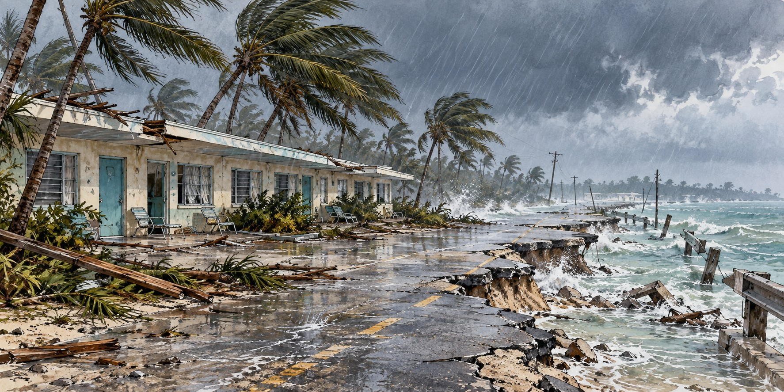

Hurricane Donna (1960)
The Storm That Crossed the Entire State — and Then Kept Going

Donna held major hurricane strength for nine consecutive days, a prolonged period of exceptional strength.
Donna brought destructive winds to the Florida Keys, the southwest coast and the interior before continuing north along the Atlantic coast. Its broad path made it a benchmark storm for a generation of Floridians.
Nine Days as a Major Hurricane
Donna became a tropical depression south of the Cape Verde Islands on August 29, 1960, and reached Category 4 with winds near 160 miles per hour as it approached the Leeward Islands on September 4. It held major hurricane status, Category 3 or stronger, for nine consecutive days, a prolonged period of exceptional strength. It brought rains that drowned 107 people in Puerto Rico, gusts as high as 173 miles per hour to the Bahamas, before reaching the United States.
The Keys, Struck Again
Watches covered Key West to Melbourne by September 7, and by media reports about half of the Middle and Upper Keys’ residents evacuated, a clear improvement over 1935. Donna’s eye crossed Duck Key around 2 a.m. on September 10 with sustained winds of 145 miles per hour, the strongest in the Keys since 1935. Surge reached up to thirteen feet, and roughly three-quarters of the buildings in the Keys suffered severe damage. The Olney Inn near mile marker 81.6 was destroyed.
A Second Landfall, and a Coast Laid Open
Donna then tracked north just offshore and made a second Florida landfall near Naples with sustained winds of 120 miles per hour, bringing coastal flooding. More than five thousand homes were damaged across southwest Florida, and Fort Myers Beach lost roughly three-quarters of its homes.
Across the Whole State
Donna turned inland and crossed the peninsula, dropping more than a foot of rain on Miami, flooding Biscayne Boulevard, and recording a 97-mile-per-hour gust far from either landfall. It left Florida just north of Daytona Beach, having delivered destructive winds to the Keys, the southwest coast, the interior, and the northeast corner within about twenty-four hours. Statewide, it destroyed more than 2,100 homes and trailers and badly damaged nearly 3,900 more. Citrus lost an estimated 25–35 percent of the grapefruit crop.
Then It Did It Again, Twice More
Donna restrengthened over the Atlantic and struck near Topsail Beach, North Carolina, as a Category 2 on September 12, killing eight. It reached Long Island that night; John Steinbeck, at Sag Harbor, later wrote in Travels with Charley of fighting to save his boat. By the next day Donna was an extratropical system over Maine, having produced gusts to 130 miles per hour in Rhode Island.
What the Storm Left Behind
Donna caused severe damage along its long track. Florida recorded twelve direct and indirect deaths, far fewer than in 1928 or 1935, but the footprint of damage touched every region of the state at once. The Weather Bureau retired the name Donna after the season. For a generation of Floridians it became the storm against which later hurricanes were measured.
Quick Facts
| Formed | August 29, 1960, south of the Cape Verde Islands |
|---|---|
| Peak intensity | Category 4, winds up to 160 mph |
| Record | Nine consecutive days as a major hurricane, a prolonged period of exceptional strength |
| Keys landfall | Early September 10, 145 mph; surge up to 13 feet |
| Second landfall | Near Naples, 120 mph; severe coastal flooding |
| Florida deaths | 12 direct and indirect deaths |
| Homes destroyed or damaged | Over 2,100 destroyed; nearly 3,900 severely damaged |
| Total toll | Severe damage from the Caribbean to the eastern United States |
| Name retired | Yes |
Did You Know?
Donna held major hurricane strength for nine straight days, a prolonged period of exceptional strength.
The Weather Bureau retired the name “Donna” after 1960.
John Steinbeck rode out Donna on Long Island and wrote about it in Travels with Charley.
Vocabulary
Major hurricane: a hurricane of Category 3 or stronger, with winds of at least 111 miles per hour.
Extratropical: a storm that has lost its tropical characteristics and behaves like a mid-latitude system.
Retired name: a storm name removed from future use after a particularly deadly or costly storm.
Discussion Questions
1. Why does the calm of a hurricane’s eye tempt people back outside, and why is it dangerous?
2. How was Donna different from earlier Florida hurricanes that hit one coast or community?
Related Articles
FLH-0005 — The Labor Day Hurricane of 1935
FLH-0007 — Hurricane Andrew (1992)
Sources
NOAA Atlantic Oceanographic and Meteorological Laboratory. “55th Anniversary of Hurricane Donna.” aoml.noaa.gov
History.com. “Hurricane Donna Batters the Florida Keys.” history.com
Hurricane Science. “1960 — Hurricane Donna.” hurricanescience.org
Stories of the Upper Keys. “Hurricane Donna, 1960.” hurricane4.com
NY NJ PA Weather. “Hurricane Donna Left an Extensive Trail of Destruction in 1960.” nynjpaweather.com
Florida Center for Instructional Technology. “Hurricanes in Florida.” fcit.usf.edu
Steinbeck, John. Travels with Charley: In Search of America. Viking Press, 1962.
Wikipedia. “Hurricane Donna.”